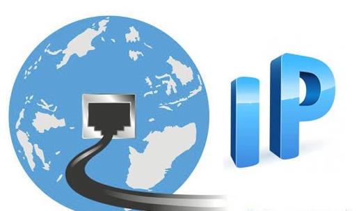

Bibliografía
Protocolo IP

https://www.ionos.es/digitalguide/servidores/know-how/internet-protocol-definicion-y-fundamentos/
Protocolo SNMP
 https://www.ionos.es/digitalguide/servidores/know-how/snmp/
https://www.ionos.es/digitalguide/servidores/know-how/snmp/